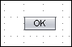
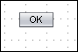

When you create components in the
they are positioned on a
grid. You can determine the size of the grid and whether components move, or snap,
to the nearest part of the grid when dropped in the Visual Designer. The following example shows a
button snapped to a visible grid.

The following example shows a button that is not snapped to the grid.

To set up the grid:
From the main menu, choose Tools > Options on Microsoft Windows or UNIX systems, or choose NetBeans > Preferences on Macintosh systems.
Click Miscellaneous and then click the Visual Web tab.
Type the new values into the corresponding fields.
Click OK.
To temporarily turn off the grid while working with components, hold down the
Shift key.